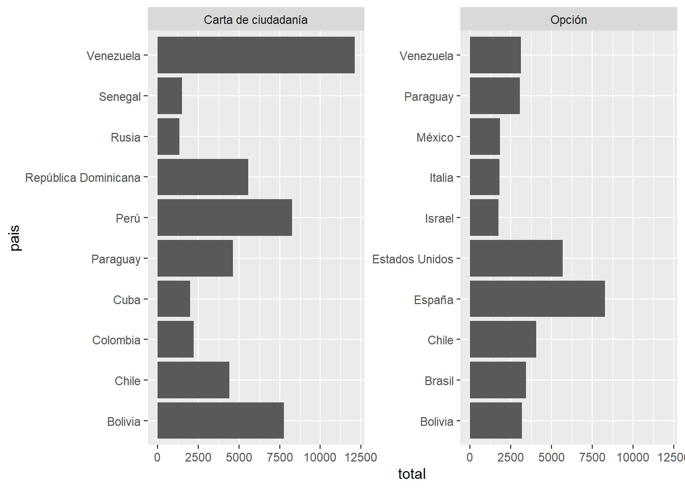
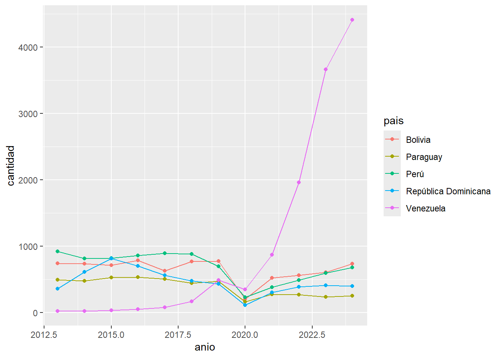
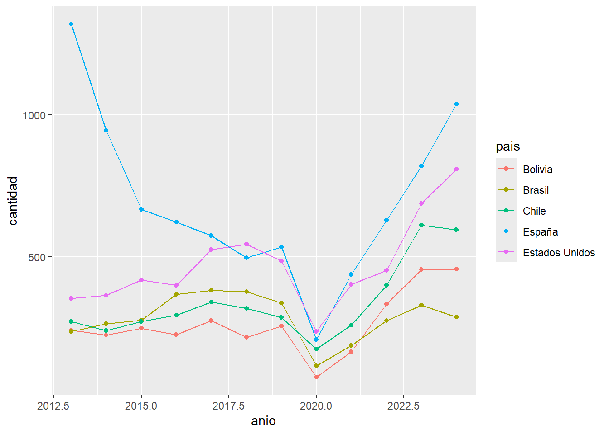
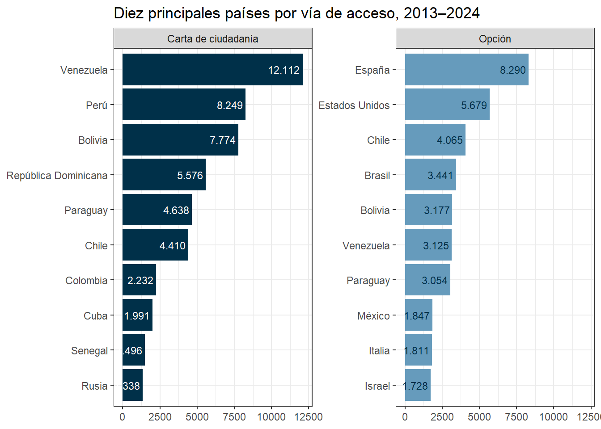

# paquetes de trabajo
library(tidyverse)
library(janitor)
library(patchwork)
library(scales)
library(knitr)
library(tidytext)Trabajo Practico 1: El modelo de visualización de Ben Fry
Maestría en Generación y Análisis de Información Estadística - UNTREF
Nuevos argentinos: un análisis de las nacionalizaciones en Argentina, años 2013–2024
Introducción: la nacionalización en Argentina
La nacionalización es un proceso voluntario por el cual una persona nacida en el extranjero adquiere la nacionalidad argentina y, con ella, la pertenencia jurídico-política a la nación. Está regida por la Ley N° 346 de Ciudadanía y Naturalización (1869) y su decreto reglamentario N° 3213/1984 (actualizado por última vez en 2004). Bajo este marco existen dos vías de acceso: la carta de ciudadanía, habitualmente conocida como “naturalización”, y la opción.
Nacionalización por carta de ciudadanía
Es la vía por la cual la población extranjera residente en Argentina puede adquirir la nacionalidad. Se trata de un procedimiento judicial que la persona inicia voluntariamente y que culmina con el otorgamiento de la carta de ciudadanía. Una vez obtenida, la persona debe tramitar ante el Registro Nacional de las Personas (RENAPER) su primer Documento Nacional de Identidad (DNI) como argentina.
Nacionalización por opción
Corresponde a personas nacidas en el extranjero que son hijas de padre o madre argentino nativo. Es un trámite administrativo que se realiza en los consulados argentinos, si la persona reside fuera del país, o en las oficinas del RENAPER y los registros civiles, si se encuentra en Argentina.
La distinción entre ambas vías es relevante para el análisis: la carta de ciudadanía refleja trayectorias de inmigración y residencia en el país, mientras que la opción expresa vínculos de filiación con la población argentina, incluida la emigrada.
Pregunta de interés
¿Desde qué países de origen y por qué vía de acceso (carta de ciudadanía u opción) se nacionalizaron las personas en Argentina entre 2013 y 2024, y cómo evolucionaron los principales orígenes en ese período?
La pregunta busca identificar qué países concentran las nacionalizaciones, si esa composición difiere según la vía de acceso y cómo cambiaron a lo largo del tiempo los cinco principales países de origen.
Fuente de datos
Se utiliza la base Población nacionalizada en Argentina, elaborada por la Dirección Nacional de Población a partir de los registros administrativos del RENAPER y publicada en el portal de datos abiertos del Estado nacional:
- Dataset: https://datos.gob.ar/dataset/poblacion-nacionalizada-en-argentina
- Página de referencia: https://www.argentina.gob.ar/interior/renaper/estadistica-de-poblacion
La base contiene la cantidad de personas que obtuvieron la nacionalidad argentina y realizaron su primer DNI, según tipo de nacionalización, país de nacimiento y año de trámite, entre el 1 de enero de 2013 y el 20 de agosto de 2025.
El registro se apoya en el proceso de digitalización de la identificación de personas iniciado con el Decreto N° 1501/2009, que estableció la emisión digital del DNI para ciudadanos nacionales y extranjeros (Resoluciones RENAPER N° 1800/2009 y N° 585/2012).
Unidad de análisis y periodo
Personas nacionalizadas que realizaron, entre el 1 de enero de 2013 y el 31 de diciembre de 2024, el trámite de su primer DNI como argentinas ante el RENAPER.
Alcances y limitaciones
- Cobertura del registro. Solo se contabilizan personas que tramitaron su primer DNI digital como argentinas. Quedan excluidas quienes tienen documentos confeccionados manualmente (Libreta Cívica, Libreta de Enrolamiento, DNI tapa verde o bordó) y quienes tramitaron el DNI digital fuera del período.
- Fecha de referencia. El año corresponde al trámite del primer DNI, no a la fecha de otorgamiento de la nacionalidad. Puede haber un desfasaje entre ambos momentos, especialmente en la vía judicial.
- Nacionalizaciones sin DNI. Las personas que obtuvieron la nacionalidad pero no tramitaron su primer DNI argentino no aparecen en la base.
- Período analizado. Aunque la base llega hasta el 20 de agosto de 2025, se excluye ese año por contener datos parciales, para trabajar solo con años completos y comparables.
Modelo de visualización de Ben Fry
Ben Fry (2008) propone siete etapas para desarrollar una visualización de datos: obtener, estructurar, filtrar, explorar, representar, refinar e interactuar. Este trabajo desarrolla las seis primeras; la última (Interact) queda fuera porque el producto final es una visualización estática.
1. Obtener (Acquire)
El dataset se obtiene desde el portal de datos abierto a través de la URL del recurso
renaper <-
"https://datosabiertos.renaper.gob.ar/Cantidad_de_tramites_de_DNI_argentino_por_nacionalidad_pais_anio.csv"
pob_nacionalizada <- read_csv(renaper, show_col_types = FALSE)
## Lectura de composición del dataset
glimpse(pob_nacionalizada)Rows: 1,974
Columns: 4
$ pais_nac <chr> "ALBANIA", "ALBANIA", "ALBANIA", "ALBANIA", "ALBANIA…
$ Tipo_nacionalidad <chr> "CARTA", "CARTA", "CARTA", "CARTA", "CARTA", "CARTA"…
$ anio <dbl> 2013, 2014, 2017, 2019, 2020, 2024, 2021, 2023, 2013…
$ cantidad <dbl> 1, 1, 2, 1, 2, 2, 1, 4, 5, 8, 5, 5, 7, 6, 4, 2, 3, 2…La base cuenta con 1.974 observaciones y 4 variables: país de nacimiento (pais_nac), vía de acceso a la nacionalidad (Tipo_nacionalidad) con las categorías CARTA y OPCION, año de trámite del primer DNI (anio) y cantidad de personas nacionalizadas (cantidad). Cada fila corresponde a una combinación de país, vía de acceso y año; las combinaciones sin casos no figuran en la base.
2. Estructurar (Parse)
Se estandarizan los nombres de las variables, se ajusta el año a número entero y se recodifican las categorías para que sean legibles en el gráfico.
nac <- pob_nacionalizada |>
clean_names() |>
mutate(
anio = as.integer(anio),
tipo = recode(tipo_nacionalidad,
"CARTA" = "Carta de ciudadanía",
"OPCION" = "Opción"),
pais = str_to_title(pais_nac),
pais = case_when(
pais == "Peru" ~ "Perú",
pais == "Mexico" ~ "México",
pais == "Republica Dominicana" ~ "República Dominicana",
.default = pais
)
)3. Filtrar (Filter)
Se restringe el período a los años completos (2013–2024), excluyendo 2025 por contener datos solo hasta el 20 de agosto.
nac_periodo <- nac |>
filter(between(anio, 2013, 2024))Para poder comparar los perfiles de origen según la vía de acceso, la selección se realiza por separado para carta de ciudadanía y para opción. Para cada vía se identifican los diez países con mayor cantidad de personas nacionalizadas en el período.
datos_a <- nac_periodo |>
group_by(tipo, pais) |>
summarise(
total = sum(cantidad),
.groups = "drop_last"
) |>
slice_max(total, n = 10, with_ties = FALSE) |>
ungroup()
kable(datos_a)| tipo | pais | total |
|---|---|---|
| Carta de ciudadanía | Venezuela | 12112 |
| Carta de ciudadanía | Perú | 8249 |
| Carta de ciudadanía | Bolivia | 7774 |
| Carta de ciudadanía | República Dominicana | 5576 |
| Carta de ciudadanía | Paraguay | 4638 |
| Carta de ciudadanía | Chile | 4410 |
| Carta de ciudadanía | Colombia | 2232 |
| Carta de ciudadanía | Cuba | 1991 |
| Carta de ciudadanía | Senegal | 1496 |
| Carta de ciudadanía | Rusia | 1338 |
| Opción | España | 8290 |
| Opción | Estados Unidos | 5679 |
| Opción | Chile | 4065 |
| Opción | Brasil | 3441 |
| Opción | Bolivia | 3177 |
| Opción | Venezuela | 3125 |
| Opción | Paraguay | 3054 |
| Opción | México | 1847 |
| Opción | Italia | 1811 |
| Opción | Israel | 1728 |
Para la serie temporal se toman los cinco primeros países de cada vía, y se arma su evolución anual. Los años sin registros se completan con cero para que las líneas no omitan esos años.
top5_tipo <- datos_a |>
group_by(tipo) |>
slice_max(total, n = 5, with_ties = FALSE) |>
ungroup()
datos_b <- nac_periodo |>
semi_join(top5_tipo, by = c("tipo", "pais")) |>
group_by(tipo, pais, anio) |>
summarise(
cantidad = sum(cantidad),
.groups = "drop"
) |>
complete(
nesting(tipo, pais),
anio = 2013:2024,
fill = list(cantidad = 0)
)Como resultado de esta etapa se obtienen dos conjuntos de datos: el primero reúne a los diez principales países de cada vía de acceso con su total del período; el segundo contiene la serie anual de los cinco principales países de cada vía.
4. Explorar (Mine)
En esta etapa se calculan medidas para identificar patrones antes de graficar: el volumen de cada vía de acceso, su evolución anual, el grado de concentración en pocos países, la coincidencia entre los rankings de ambas vías y la evolución de los principales países.
¿Cuánto pesa cada vía en el total?
totales_tipo <- nac_periodo |>
group_by(tipo) |>
summarise(
total_tipo = sum(cantidad),
.groups = "drop"
)
total <- totales_tipo |>
mutate(pct = round(total_tipo / sum(total_tipo) * 100, 1))
kable(total)| tipo | total_tipo | pct |
|---|---|---|
| Carta de ciudadanía | 59019 | 54.2 |
| Opción | 49899 | 45.8 |
Las dos vías tienen volúmenes comparables: la carta de ciudadanía reúne 59.019 personas (54,2%) y la opción 49.899 (45,8%).
¿Cómo evolucionó cada vía año a año?
nac_periodo |>
group_by(anio, tipo) |>
summarise(
total = sum(cantidad),
.groups = "drop"
) |>
pivot_wider(names_from = tipo, values_from = total) |>
kable()| anio | Carta de ciudadanía | Opción |
|---|---|---|
| 2013 | 4655 | 4416 |
| 2014 | 4484 | 3970 |
| 2015 | 4818 | 3925 |
| 2016 | 4626 | 4195 |
| 2017 | 4427 | 4461 |
| 2018 | 4471 | 4588 |
| 2019 | 4437 | 4130 |
| 2020 | 1622 | 1519 |
| 2021 | 3569 | 2878 |
| 2022 | 5311 | 4373 |
| 2023 | 7351 | 5508 |
| 2024 | 9248 | 5936 |
Entre 2013 y 2019 ambas vías se mantienen estables, en torno a 4.000–4.800 personas por año. En 2020 caen a alrededor de un tercio, en coincidencia con la pandemia. A partir de 2022 la recuperación es marcada: en 2024 la carta de ciudadanía prácticamente duplica su nivel de 2013 (9.248 frente a 4.655), mientras que la opción crece un 34%.
¿Qué tan concentradas están las nacionalizaciones en cada vía?
datos_a |>
left_join(totales_tipo, by = "tipo") |>
group_by(tipo) |>
mutate(
pct = round(total / total_tipo * 100, 1),
pct_acum = cumsum(pct)
) |>
ungroup() |>
select(-total_tipo) |>
kable()| tipo | pais | total | pct | pct_acum |
|---|---|---|---|---|
| Carta de ciudadanía | Venezuela | 12112 | 20.5 | 20.5 |
| Carta de ciudadanía | Perú | 8249 | 14.0 | 34.5 |
| Carta de ciudadanía | Bolivia | 7774 | 13.2 | 47.7 |
| Carta de ciudadanía | República Dominicana | 5576 | 9.4 | 57.1 |
| Carta de ciudadanía | Paraguay | 4638 | 7.9 | 65.0 |
| Carta de ciudadanía | Chile | 4410 | 7.5 | 72.5 |
| Carta de ciudadanía | Colombia | 2232 | 3.8 | 76.3 |
| Carta de ciudadanía | Cuba | 1991 | 3.4 | 79.7 |
| Carta de ciudadanía | Senegal | 1496 | 2.5 | 82.2 |
| Carta de ciudadanía | Rusia | 1338 | 2.3 | 84.5 |
| Opción | España | 8290 | 16.6 | 16.6 |
| Opción | Estados Unidos | 5679 | 11.4 | 28.0 |
| Opción | Chile | 4065 | 8.1 | 36.1 |
| Opción | Brasil | 3441 | 6.9 | 43.0 |
| Opción | Bolivia | 3177 | 6.4 | 49.4 |
| Opción | Venezuela | 3125 | 6.3 | 55.7 |
| Opción | Paraguay | 3054 | 6.1 | 61.8 |
| Opción | México | 1847 | 3.7 | 65.5 |
| Opción | Italia | 1811 | 3.6 | 69.1 |
| Opción | Israel | 1728 | 3.5 | 72.6 |
La carta de ciudadanía está más concentrada: sus diez principales países reúnen el 84,5% del total de la vía, y los tres primeros casi la mitad. En opción, los diez principales reúnen el 72,6%.El porcentaje se calcula sobre el total de cada vía, con todos los países. La última fila de cada vía indica cuánto concentran sus diez principales países
¿Qué países aparecen en las dos vías?
datos_a |>
count(pais) |>
filter(n == 2) |>
kable()| pais | n |
|---|---|
| Bolivia | 2 |
| Chile | 2 |
| Paraguay | 2 |
| Venezuela | 2 |
Solo cuatro países figuran entre los diez principales de ambas vías: Bolivia, Chile, Paraguay y Venezuela, todos sudamericanos. El resto de los rankings es distinto: en carta predominan países latinoamericanos y del Caribe, y en opción aparecen España, Estados Unidos, México, Italia e Israel.
¿Cómo evolucionaron los cinco principales de cada vía?
datos_b |>
filter(anio %in% c(2013, 2024)) |>
pivot_wider(
names_from = anio,
values_from = cantidad,
names_prefix = "a"
) |>
mutate(var_pct = round((a2024 - a2013) / a2013 * 100, 1)) |>
kable()| tipo | pais | a2013 | a2024 | var_pct |
|---|---|---|---|---|
| Carta de ciudadanía | Bolivia | 740 | 737 | -0.4 |
| Carta de ciudadanía | Paraguay | 493 | 251 | -49.1 |
| Carta de ciudadanía | Perú | 920 | 678 | -26.3 |
| Carta de ciudadanía | República Dominicana | 361 | 398 | 10.2 |
| Carta de ciudadanía | Venezuela | 19 | 4411 | 23115.8 |
| Opción | Bolivia | 242 | 457 | 88.8 |
| Opción | Brasil | 237 | 289 | 21.9 |
| Opción | Chile | 272 | 595 | 118.8 |
| Opción | España | 1319 | 1037 | -21.4 |
| Opción | Estados Unidos | 353 | 809 | 129.2 |
# Año de máximo de cada país
datos_b |>
group_by(tipo, pais) |>
slice_max(cantidad, n = 1, with_ties = FALSE) |>
ungroup() |>
kable()| tipo | pais | anio | cantidad |
|---|---|---|---|
| Carta de ciudadanía | Bolivia | 2016 | 783 |
| Carta de ciudadanía | Paraguay | 2016 | 533 |
| Carta de ciudadanía | Perú | 2013 | 920 |
| Carta de ciudadanía | República Dominicana | 2015 | 816 |
| Carta de ciudadanía | Venezuela | 2024 | 4411 |
| Opción | Bolivia | 2024 | 457 |
| Opción | Brasil | 2017 | 382 |
| Opción | Chile | 2023 | 612 |
| Opción | España | 2013 | 1319 |
| Opción | Estados Unidos | 2024 | 809 |
En carta de ciudadanía, Venezuela pasa de 19 personas en 2013 a 4.411 en 2024, casi la mitad de todas las cartas de ese año. En cambio, Perú y Paraguay disminuyen (-26% y -49%) y Bolivia se mantiene estable. En opción, Estados Unidos y Chile más que duplican sus valores, mientras que España, aunque sigue primera, desciende un 21% respecto de 2013.
Hallazgos principales:
Las dos vías de acceso tienen un peso similar, pero perfiles de origen distintos: solo cuatro países coinciden en sus rankings.
La carta de ciudadanía se concentra en países latinoamericanos y del Caribe; la opción incluye además países con presencia de población argentina emigrada.
La pandemia produjo una caída abrupta en 2020, seguida de un crecimiento sostenido hasta 2024.
El crecimiento reciente de la carta de ciudadanía se explica principalmente por la migración desde Venezuela, que reemplaza a Perú y Bolivia como principal origen.
5. Representar (Represent)
La visualización combina dos gráficos, cada uno construido a partir de uno de los conjuntos de datos definidos en la etapa de filtrado.
Diez principales países por vía de acceso (datos_a)
Para comparar el total de personas nacionalizadas entre países se eligen barras horizontales, separadas por vía de acceso. La longitud de la barra es la codificación más precisa para comparar cantidades, y la orientación horizontal permite leer nombres de países largos.
ggplot(datos_a, aes(total, pais)) +
geom_col() +
facet_wrap(~ tipo, scales = "free_y") +
labs(
title =
)
Evolución anual de los cinco principales países (datos_b)
Para mostrar la evolución en el tiempo se elabora un gráfico de líneas con puntos para cada vía de acceso: la línea muestra la tendencia y los puntos señalan el valor de cada año, lo que facilita identificar cambios puntuales. Se limita a los cinco principales países de cada vía porque con más series el gráfico se vuelve difícil de leer.
A diferencia de las barras, donde los totales de ambas vías son comparables, en la serie los volúmenes anuales difieren mucho (Venezuela supera las 4.000 personas en carta de ciudadanía, mientras que en opción ningún país alcanza las 1.400). Por eso cada vía tiene su propia escala, y los valores se comparan dentro de cada vía y no entre ellas.
datos_b |>
filter(tipo == "Carta de ciudadanía") |>
ggplot(aes(anio, cantidad, color = pais)) +
geom_line() +
geom_point()
datos_b |>
filter(tipo == "Opción") |>
ggplot(aes(anio, cantidad, color = pais)) +
geom_line() +
geom_point()
Estas versiones base permiten identificar los aspectos a mejorar en la etapa siguiente: barras sin ordenar, años con decimales en el eje, leyendas extensas y ausencia de títulos y fuente.
6. Refinar (Refine)
A partir de las versiones base se mejora la presentación de ambos gráficos: se ordenan las barras de mayor a menor y se agregan sus valores; se ajustan las marcas del eje horizontal de la serie para mostrar solo años enteros; se reemplaza la leyenda por etiquetas directas al final de cada línea; se sombrea el año 2020 para señalar la pandemia; se usa separador de miles en formato local; se reduce la grilla y se agregan títulos y fuente. Finalmente, los cuatro gráficos se combinan en una única composición, con una columna por vía de acceso.
datos_a |>
mutate(pais = reorder_within(pais, total, tipo)) |>
ggplot(aes(total, pais, fill = tipo)) +
geom_col() +
geom_text(
aes(label = number(total, big.mark = ".", decimal.mark = ","), color = tipo),
hjust = 1.1,
size = 3) +
scale_y_reordered() +
scale_fill_manual(values = c("#003049", "#669BBC"), guide = "none") +
scale_color_manual(values = c("white", "#003049"), guide = "none") +
facet_wrap(~ tipo, scales = "free_y") +
labs(
title = "Diez principales países por vía de acceso, 2013–2024",
x = NULL, y = NULL
) +
theme_bw()